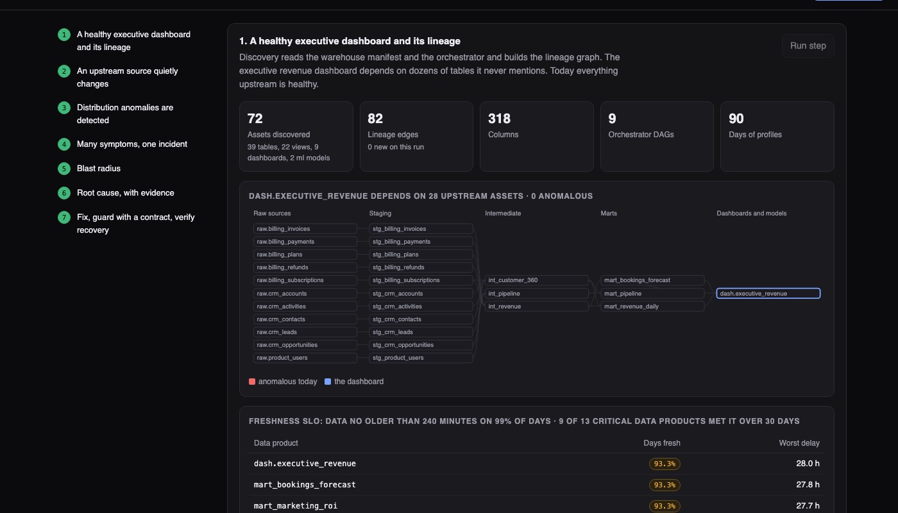
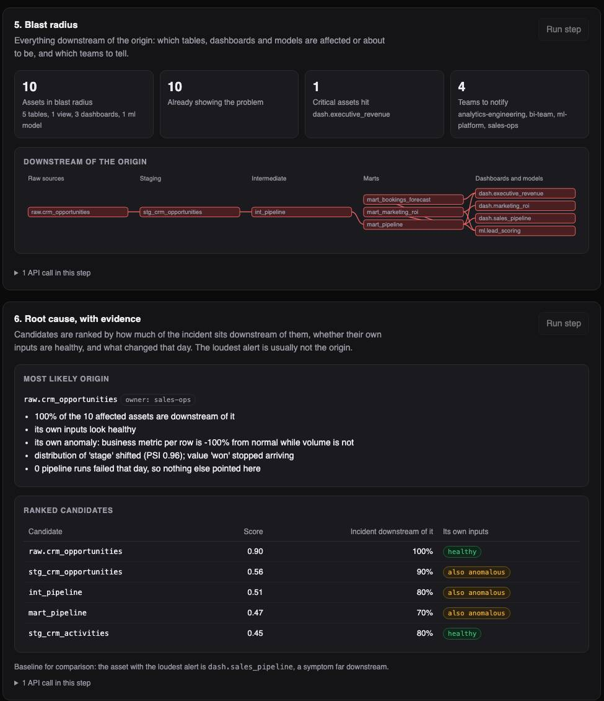

Python · Data engineering · 2026-10
The Dashboard Is Wrong and No Job Failed. Where Did It Break?
A monitoring system for a data warehouse. When a source quietly stopped sending one kind of record, every pipeline still reported success; this flagged the 10 affected tables and dashboards, raised them as one incident, and named the source table as the cause. Across 108 planted failures it put the true origin first 94% of the time, against 31% for blaming the loudest alert.

Built from a written blueprint as one vertical slice, on a simulated warehouse: the 72 tables and dashboards, their daily statistics and every failure are generated, so each result can be checked against a known answer. The simulator's noise is tidy (one weekly cycle, mild growth), so the precision here would not carry over to a real warehouse unchanged. Lineage is table to table only. Not built: connectors to a real warehouse, column-level lineage, paging anyone, Kafka, Terraform, single sign-on.
01 — The problem
A company's revenue dashboard is fed by dozens of tables it never mentions. One night a source system changes what it sends. Every job still finishes with a green tick, the row counts look normal, and the dashboard is now wrong. Usually someone in a meeting notices days later, and an engineer spends hours walking backwards through the tables. Can software notice the same morning, say what else is affected, and point to where it started?
Blueprint 8 of ten in an enterprise build book, built as the demo scenario end to end.
02 — What I built
A Python service on PostgreSQL with a web page, started by one docker compose up.
- Discovery: reads the warehouse's model list and job schedule and builds the map of which table feeds which (72 assets, 82 links).
- Daily profile: for each table: row count, how old the data is, share of empty values, the mix of categories, a business number.
- Anomaly detection: compares today's profile with the same table's own recent history.
- Incident grouping: anomalies on connected tables become one incident.
- Blast radius and root cause: what is downstream, who owns it, and a ranked list of where it most likely began, with reasons in plain words.
- Contracts and recovery check: rules a table must keep, and an incident that cannot be closed until the data is clean.
03 — How it was built
- 01
Know what normal looks like for each table
Volume halves every weekend, so "today against the average" is useless: either weekends alarm or nothing does. Each table is compared with the same weekday in its last four weeks, using the median and the median spread, which one bad day cannot drag around. The growth trend is the median of week-over-week changes for the same reason.
med = xs[len(xs) // 2] mad = sorted(abs(x - med) for x in xs)[len(xs) // 2] return med, max(1.4826 * mad, 0.02 * abs(med), 1e-9) - 02
Catch what row counts cannot see
In the demo failure the number of rows barely moves. What changes is the mix: "won" deals stop arriving. A standard measure of how far a mix of categories has moved from its usual shape (the population stability index) goes from near 0 to 0.96, where 0.25 is already considered a major shift. The business number per row also collapses while volume does not.
if shift > PSI_ALERT: missing = [k for k, v in ref.items() if v > 0.03 and dist.get(k, 0) < 0.002] - 03
One strong signal, or two independent ones
The first version alerted on any wobble and produced a stream of false alarms. Now a table alerts only on one strong signal or two moderate signals of different kinds. This costs some faint downstream symptoms and buys a feed where nearly every alert is real. A noisy feed gets muted, and a muted feed catches nothing.
return any(s["strong"] for s in signals) or len({s["metric"].split(":")[0] for s in signals}) >= 2 - 04
Ten alerts, one incident
If two anomalous tables are connected through the lineage map, upstream or downstream, they belong to the same incident. Ten alerts became one page for one team, with the list of everything downstream and the four teams that own it.
related = (set(reach(up, a)) | set(reach(down, a))) & anomalous - 05
Rank where it started
The loudest alert is usually far downstream, where a small change has compounded. The origin is the table that has the whole incident below it and whose own inputs look healthy. Each candidate gets a score from four things: how much of the incident is downstream of it, whether its inputs are clean, how strong its own anomaly is, and whether anything about it changed that day.
score = 0.45 * coverage + 0.3 * (0.0 if sick_parents else 1.0) * (1.0 if c in members else 0.3) + 0.15 * min(1.0, own / 6) + 0.1 * bool(change)
04 — Results
The demo. A source stops sending "won" deals. All 9 jobs report success. 10 of 72 assets are flagged, grouped into 1 incident that reaches the executive revenue dashboard, and the source table is ranked first as the cause. Closing the incident early is refused; it closes after a clean day and a new rule on the source both check out.

Across 12 simulated quarters with 108 planted failures of six kinds (stale source, renamed column, data loaded twice, broken join, a category vanishing, a time-zone shift):
| Measure | This build | Simple way |
|---|---|---|
| Alerts that were real | 97.6% | 100% |
| Affected table-days that were flagged | 77.7% | 5.9% |
| True origin ranked first | 94% | 31% |
The simple ways: alert when the row count is three standard deviations from its two-week average; blame the table with the loudest alert. The simple alert is never wrong because it almost never fires.
- 105 of 108 failures were caught on their first day, and each arrived as a single incident.
- 1,339 flagged table-days were grouped into 202 incidents, 6.6 alerts per incident.
- The true origin was in the top three candidates for all 105.
What it misses. About a fifth of affected table-days, mostly small effects far downstream that stay under the alert threshold. Those tables were still listed in the incident's blast radius.
Checks. 34 tests, including: healthy weekends raising no alerts, five other failure kinds traced to their origin through the API, an incident that cannot be closed while its data or its rule still fails, a repeated request not advancing the warehouse twice, and one company unable to see another's tables or incidents.
05 — What I'd do next
- Point it at a real warehouse: reading real table statistics and real job history is where the noise will be.
- Column-level lineage, so the cause can be a column, not a table.
- Send the incident to the owning team's chat or pager.